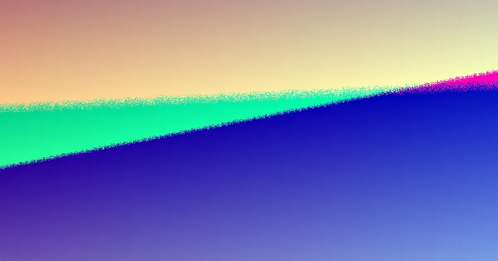

In Toowoomba, the sensible time to book retaining wall repairs is after you have observed how the wall behaves in ordinary rain, checked where water exits, confirmed access for spoil removal and staging, and clarified whether retained fill over 1 metre, a wall within 1.5 metres of a building or another wall, surcharge loads, or a combined fence and wall height over 2 metres raises an approval question. Material choice should wait until movement, drainage and load are understood.
For local buyers, retaining wall repairs toowoomba seasonal timing a practical sequence for deciding when to inspect, quote and schedule work
Retaining Wall Repairs Toowoomba Seasonal Timing Explained
Seasonal timing for retaining wall repairs toowoomba seasonal is less about a calendar month and more about matching the job to site evidence. A wall that stains, sheds damp soil, leans or shifts after wet periods is telling you where pressure is building. Dry spells can make access easier for inspection, yet they can also hide the drainage path that caused trouble. The better approach is to track the wall across a few rain events, then act before minor movement becomes a wider stability, boundary or landscaping problem.
- After rain: look for fresh cracking, leaning, bulging, water marks, soft ground and changed discharge points.
- Before work is priced: note wall height, material, retained load, nearby driveway, batter, building, fence or second wall, and side access limits.
- Before approval is assumed: check triggers linked to retained fill above natural ground, closeness to structures and surcharge above the retained area.
When inspection should come first
Inspection should lead the schedule when the failure pattern is unclear. Photos help, but the scope still turns on retained load, drainage, access and a written repair plan. If a sloped yard, boundary level change, raised garden or driveway edge is involved, the question may move from patch repair to replacement or design-led work. That decision is cleaner when it is made before excavation, temporary support or spoil removal lock the job into one method.
For homeowners, the useful brief is factual: suburb or postcode, wall height and material, visible movement, water paths, soft spots, access constraints and what sits above the retained area. Concrete sleepers are often framed for sloping yards, boundary levels and lower-maintenance landscaping; block walls for raised gardens, boundary changes and stronger finishes; timber sleepers for lower beds, side paths and budget-conscious shaping. Timing should protect that assessment, not rush it.
Plan around drainage, access and staging
Drainage is the quiet variable in scheduling. Water trapped behind a wall adds pressure, softens soil and can redirect nuisance water, so repairs make sense only when subsoil drainage, surface runoff and discharge points are understood. If the failed area worsens after wet periods, delay can turn a drainage fix into a rebuild. If the site is narrow, paved, fenced or hemmed in by a shed or driveway, staging may need more room and time before materials are even discussed.
A simple timing rule is to separate discovery from construction. Discovery includes rain observation, photos, boundary questions and approval checks. Construction includes excavation, removal, temporary support and reinstatement. Owners comparing more on retaining wall repairs toowoomba warranty can use the same evidence pack to ask what is covered, what is excluded and how workmanship, drainage and materials are described.
Approval, fence and boundary timing
Approval timing should be settled before trades are mobilised. In Toowoomba guidance, retained fill higher than 1 metre above natural ground surface, a wall within 1.5 metres of a building or another retaining wall, and surcharge such as a driveway, batter or building above the wall can change what is required. A fence above a wall may also need siting discretion where the combined height exceeds 2 metres above natural ground level, especially near a boundary.
- Early: ask whether wall height, retained fill or fence height creates an approval trigger.
- Early: identify surcharge from vehicles, structures, batters or neighbouring levels.
- Early: clarify boundary responsibility through land facts, benefit, prior works and, if needed, legal or dispute-resolution advice rather than assuming Council decides ownership.
A repair-versus-replace timing call
The seasonal choice becomes sharper when repair and replacement are compared. Repair suits a wall only where the provider can assess the cause and set a written scope that deals with it. If drainage has failed, levels have moved, the wall has leaned or nearby loads have altered, replacement may be the cleaner path even if it takes longer to plan. The aim is not to wait for perfect weather; it is to avoid paying for a patch while the cause remains active.
- Track wet-weather behaviour. After ordinary rain, record cracks, lean, damp soil, water marks and where runoff exits the yard.
- Build a factual brief. List suburb or postcode, wall height, material, visible movement, access limits and what sits above the retained area.
- Screen approval triggers. Check retained fill over 1 metre, 1.5 metre proximity to a building or wall, surcharge loads and combined fence height over 2 metres.
- Resolve scope before mobilisation. Decide whether the evidence points to repair, replacement or a new wall before excavation, spoil removal or temporary support begins.
| Stage | What to confirm | Why timing matters |
|---|---|---|
| Observe | Movement, staining, damp soil, discharge after rain | Shows whether drainage or load is driving failure |
| Assess | Height, material, retained load, access, nearby structures | Sets repair, replacement or design-led scope |
| Check | 1 m fill, 1.5 m proximity, surcharge, 2 m combined fence height | Avoids pausing work after approval questions emerge |
| Schedule | Staging, spoil removal, temporary support, boundary talks | Keeps access and neighbour issues from delaying the job |
Common questions
Is there a best season to repair a retaining wall in Toowoomba? There is no single best month. The stronger timing signal is evidence: how the wall behaves in rain, whether access is workable, and whether approval, boundary and drainage questions are answered before work starts.
Should I wait until the wall dries out before asking for a quote? Do not wait if movement is obvious. Use dry access for inspection, but keep notes and photos from wet periods because they reveal pressure, discharge and soft-ground patterns that a dry surface can conceal.
What can delay repairs once a problem is found? Common delays come from unclear drainage, narrow access, spoil removal limits, temporary support needs, approval triggers, fence height questions and boundary responsibility that needs neighbour or legal input.
This guide covers timing considerations for Toowoomba retaining wall repair decisions, grounded in local approval triggers, drainage, access and scope-setting facts.